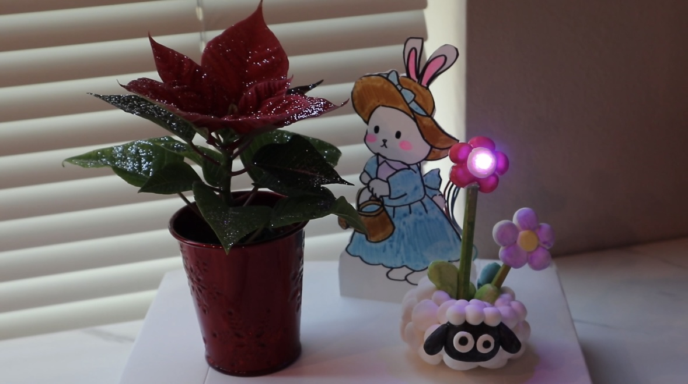
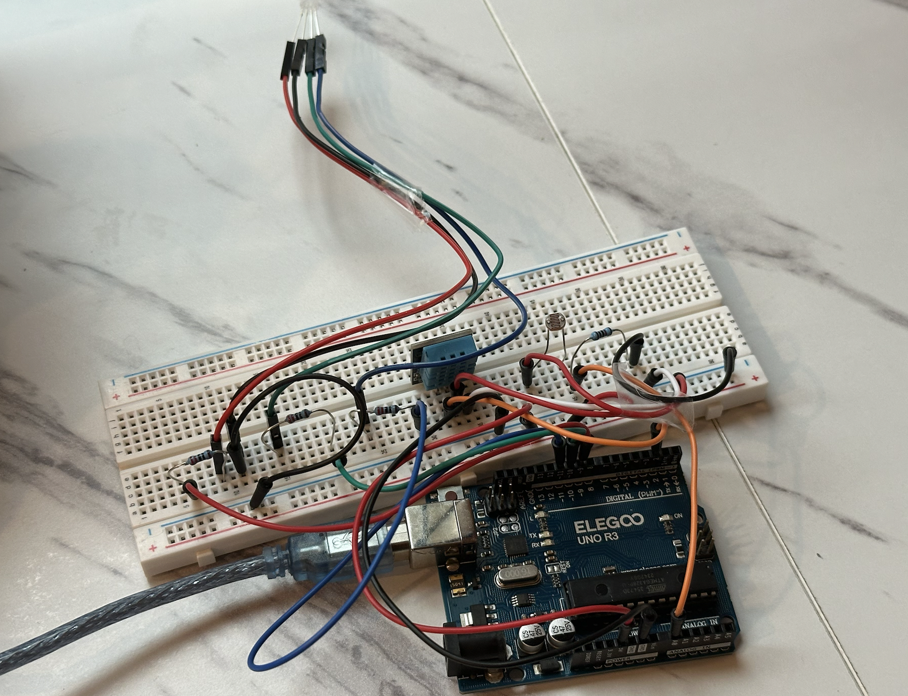
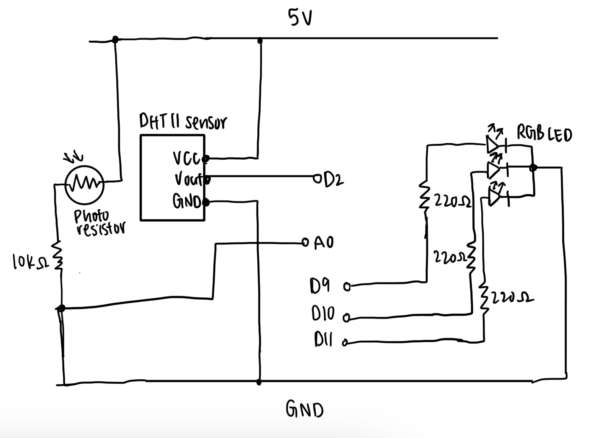

Click here to watch my Plant Companion demo video!
#include "DHT.h"
// LED pins connection
const int redPin = 9;
const int greenPin = 10;
const int bluePin = 11;
// photoresistor connection
const int lightPin = A0;
#define DHTPIN 2
#define DHTTYPE DHT11
// create a DHT object
DHT dht(DHTPIN, DHTTYPE);
// set thresholds for light level and temp
const int LIGHT_THRESHOLD = 600; // boundary between dim and bright
const float TEMP_OK_LOW = 21.0; // lowest comfortable temperature
const float TEMP_OK_HIGH = 24.0; // highest comfortable temperature
void setup() {
// start serial communication
Serial.begin(9600);
// initialize the DHT11 temperature sensor
dht.begin();
// set LED pins as outputs
pinMode(redPin, OUTPUT);
pinMode(greenPin, OUTPUT);
pinMode(bluePin, OUTPUT);
// LED starts as off
setColor(0, 0, 0);
}
void loop() {
// Read sensors
float t = dht.readTemperature();
int lightRaw = analogRead(lightPin);
// if the DHT sensor fails to read
if (isnan(t)) {
// print error message
Serial.println("Failed to read from DHT sensor!");
// turn off LED
setColor(0, 0, 0);
delay(1000);
return;
}
// determine if the current environment is bright enough and has comfortable temperature
bool isBright = (lightRaw > LIGHT_THRESHOLD); // true if room is bright
bool tempOK = (t >= TEMP_OK_LOW && t <= TEMP_OK_HIGH); // true if temp is in the OK range
int r = 0, g = 0, b = 0;
if (!isBright && !tempOK) {
// Dim + inadequate temp, LED is purple
r = 255; g = 0; b = 255;
} else if (!isBright && tempOK) {
// Dim + comfortable temp, LED is blue
r = 0; g = 0; b = 255;
} else if (isBright && !tempOK) {
// Bright + inadequate temp, LED is red
r = 255; g = 0; b = 0;
} else {
// Bright + comfortable temp, LED is green
r = 0; g = 255; b = 0;
}
setColor(r, g, b);
// Print the data in serial monitor
Serial.print("Temp: ");
Serial.print(t);
Serial.print(" C | Light: ");
Serial.print(lightRaw);
Serial.print(" | Bright? ");
Serial.print(isBright ? "YES" : "NO");
Serial.print(" | Temp OK? ");
Serial.println(tempOK ? "YES" : "NO");
delay(1000);
}
// set RGB color
void setColor(int r, int g, int b) {
// write PWM values to corresponding channel
analogWrite(redPin, r);
analogWrite(greenPin, g);
analogWrite(bluePin, b);
}